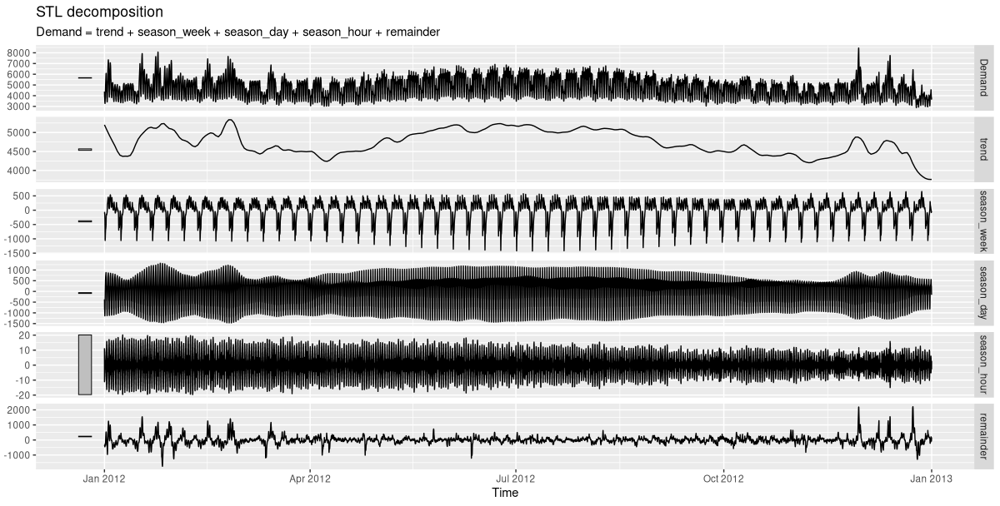
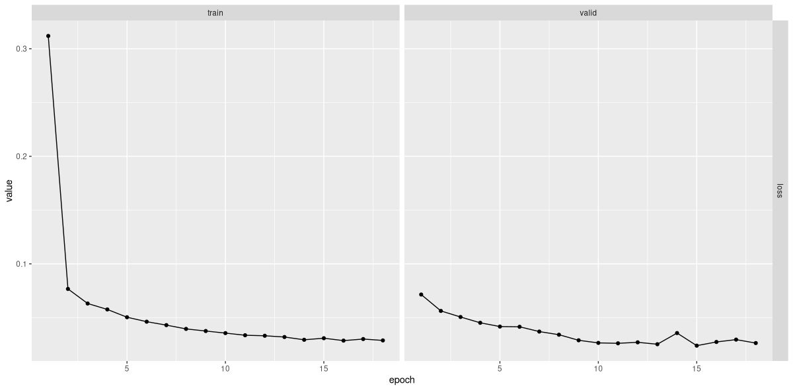
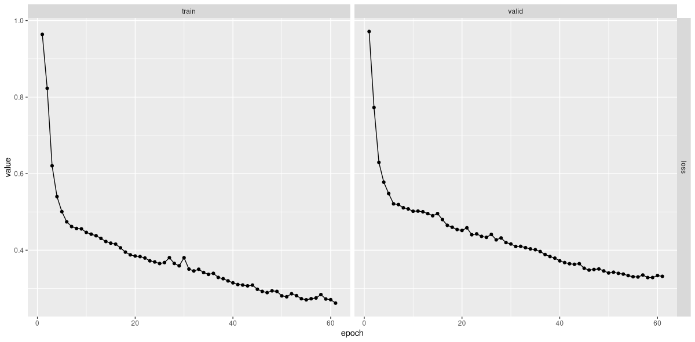
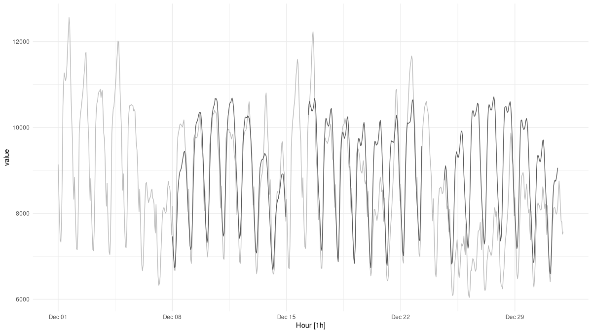

library(torch)
library(zeallot) # for destructuring using %<-%
rnn_cell <- nn_module(
initialize = function(input_size, hidden_size) {
self$linear_i_h <- nn_linear(input_size, hidden_size)
self$linear_h_h <- nn_linear(hidden_size, hidden_size)
},
forward = function(x, prev_state) {
torch_tanh(self$linear_i_h(x) +
self$linear_h_h(prev_state))
}
)21 Time series
In this chapter, we’ll again look at a new type of data: time series. Previously, moving on from images to tabular data, we found a substantial difference in that image data are homogeneous, while tabular data aren’t. With images, individual values correspond to pixels, or positions on a grid. With tabular data, values can – in principle – be “anything”; but most often, we deal with a mix of categorical, ordinal, and numerical data. However, both types of application have one thing in common: All values relate to the same point in time.
With time series, we’re facing a new situation. Assume the series is one-dimensional, that is, it has a single feature. Thus, the data type is homogeneous. But now, the input is a sequence. What follows?
Before, when a mix of data types were present, we found we had to do some pre-processing up-front. We also saw that, by adding in a new type of module - the embedding module – we could refine and enhance the overall (linear) model. Now though, a bigger change is needed. We again will have to do some pre-processing; but this time, we’ll also need a different type of top-level model, a type as different from the standard feed-forward architecture as is the convolutional one we already studied.
21.1 Deep learning for sequences: the idea
Say we have a sequence of daily average temperatures, measured in degrees Celsius: -1.1, 2.0, -0.2, -0.9, 4.5, -3.6, -9.1. Clearly, these values are not independent; we’d hardly guess that the very next measurement would result in in, say, 21. In fact, if these seven averages were all you’re given, your best guess for the next day would probably just be -9.1. But when people say “time series”, they have longer sequences in mind. With longer sequences, you can try to detect patterns, such as trends or periodicities. And that’s what the established techniques in time series analysis do.
For a deep learning model to do the same, it first of all has to “perceive” individual values as sequential. We make that happen by increasing tensor dimensionality by one, and using the additional dimension for sequential ordering. Now, the model has to do something useful with that. Think back of what it is a linear model is doing: It takes input \(\mathbf{X}\), multiplies by its weight matrix \(\mathbf{W}\), and adds bias vector \(\mathbf{b}\):
\[ f(\mathbf{X}) = \mathbf{X}\mathbf{W} + \mathbf{b} \]
In sequence models, this type of operation is still present; it’s just that now, it is executed for every time step – i.e., every position in the sequence – in isolation. But this means that now, the relationship between time steps has to be taken care of. To that end, the module takes what was obtained at the previous time step, applies a different weight matrix, and adds a different bias vector. This, in itself, is again an affine transformation, – just not of the input, but of what is called the previous state. The outputs from both affine computations are added, and the result then serves as prior state to the computation due at the next time step.
In other words, at each time step, two types of information are combined: the (weight-transformed) input for the current time step, and the (weight-transformed) state that resulted from processing the previous one. In math:
\[ state_{(t)} = f(\mathbf{W_{input}}\mathbf{X_{(t)}} + \mathbf{b_{input}} + \mathbf{W_{state}}\mathbf{X_{(t-1)}} + \mathbf{b_{state}}) \]
This logic specifies a recurrence relation, and modules implementing it are called recurrent neural networks (RNNs). In the next section, we’ll implement such a module ourselves; you’ll see how, in code, that recurrence maps to straightforward iteration. Before, two remarks.
First, in the above formula, the function applied to the sum of the two transformations represents an activation; typically for RNNs, the default is the hyperbolic tangent, torch_tanh().
Second, in the official torch documentation, you’ll see the formula written this way:
\[ h_{(t)} = f(\mathbf{W_{i\_h}\mathbf{X_{(t)}} }+ \mathbf{b_{i\_h}} + \mathbf{W_{h\_h}\mathbf{X}_{(t-1)}} + \mathbf{b}_{h\_h}) \]
Here \(h\) stands for “hidden”, as in “hidden state”, and subscripts \(i\_h\) and \(h\_h\) stand for “input-to-hidden” and “hidden-to-hidden”, respectively. The reason I’d like to de-emphasize the “hidden” in “hidden state” is because in the torch implementation, the state is not necessarily hidden from the user. You’ll see what I mean below. (Pretty soon, I’ll give up resistance against the term, though, since it is ubiquitous in descriptive prose as well as code (for example, as regards variable naming). But I wanted to state this clearly at least once, so you won’t be confused when mapping your mental model of the algorithm to the behavior of torch RNNs.
21.2 A basic recurrent neural network
In the above discussion, we identified two basic things a recurrent neural network has to do: (1) iterate over the input sequence; and (2) execute the “business logic” of a sequence, that is, combine information from the previous as well as the current time step.
Commonly, these duties are divided between two different objects. One, referred to as the “cell”, implements the logic. The other takes care of the iteration. The reason for this modularization is that both “inner” and “outer” logic should be modifiable independently. For example, you might want to keep the way you iterate over time steps, but modify what happens at each point in the iteration. This will get more concrete later, when we talk about the most-used sub-types of RNNs.
In our basic implementation of a basic RNN, both cell and iteration handler are nn_module()s. First, we have the cell.
21.2.1 Basic rnn_cell()
The logic combines two affine operations; and affine operations are just what linear modules are for. We therefore just have our cell delegate to two linear modules, append the respective outputs, and apply a tanh activation.
As already alluded to above, in naming the modules and parameters, I’m following the torch conventions, so things will sound familiar when we move on to actual torch modules. Most notably, this includes referring to the state as “hidden state”, and thus, to its dimensionality as hidden_size, even though state is hidden from the user only under certain circumstances (which we’ll come to).
From the way the cell has been defined, we see that to instantiate it, we need to pass hidden_size and input_size – the latter referring to the number of features in the dataset. Let’s make those 3 and 1, respectively:
cell <- rnn_cell(input_size = 1, hidden_size = 3)As a quick test, we call the module on a (tiny) batch of data, passing in the previous (or: initial) state. As in the actual torch implementation, the state is initialized to an all-zeros tensor:
cell(torch_randn(2, 1), torch_zeros(2, 3))torch_tensor
-0.6340 0.9571 -0.9886
-0.3007 0.9201 -0.9689
[ CPUFloatType{2,3} ][ grad_fn = <TanhBackward0> ]Note the dimensionality of the output. For each batch item, we get the new state, of size hidden_size.
Now, a cell is not normally supposed to be called by the user; instead, we should call the to-be-defined rnn_module(). That module will take care of the iteration, delegating to an instance of rnn_cell() at each step. Let’s implement this one next.
21.2.2 Basic rnn_module()
Conceptually, this module is easily characterized – it iterates over points in time. But there are a few things to note in the implementation that follows.
First, note that it expects a single argument to forward(), not two – there is no need to pass in an initial state. (In actual torch implementations, the user can pass an initial state to start from, if they want. But if they don’t, the state will start out as all zeros, just like in this prototype.)
Second, and most importantly, let’s talk about the dimensionality of x, the single input argument. Where the cell operates on tensors of size batch_size times num_features, the iteration module expects its input to have an additional dimension, inserted at position two – right “in the middle”. You can see this in the line
c(batch_size, timesteps, num_features) %<-% x$size()This additional dimension is used to capture evolution over time. rnn_module() will iterate over its values, call rnn_cell() for each step in the sequence, and keep track of the outputs:
for (t in 1:timesteps) {
new_state <- self$cell(x[ , t, ], cur_state)
states[[t]] <- new_state
cur_state <- new_state
}As you see, in every call to self$cell, the previous state is passed as well, fulfilling the contract on rnn_cell$forward().
The complete code for rnn_module() is just slightly longer than that for the cell:
rnn_module <- nn_module(
initialize = function(input_size, hidden_size) {
self$cell <- rnn_cell(input_size, hidden_size)
self$hidden_size <- hidden_size
},
forward = function(x) {
c(batch_size, timesteps, num_features) %<-% x$size()
init_hidden <- torch_zeros(batch_size, self$hidden_size)
cur_state <- init_hidden
# list containing the hidden states
# (equivalently: outputs), of length timesteps
states <- vector(mode = "list", length = timesteps)
# loop over time steps
for (t in 1:timesteps) {
new_state <- self$cell(x[, t, ], cur_state)
states[[t]] <- new_state
cur_state <- new_state
}
# put sequence of states in dimension 2
states <- torch_stack(states, dim = 2)
list(states, states[, timesteps, ])
}
)Note how dimension two, the one that, in the input, held the time dimension, now is used to pack the states obtained for each time step. I’ll say more about that in a second, but first, let’s test that module. I’ll stay with a state size (hidden_size) of three, and make our sample input have four consecutive measurements:
rnn <- rnn_module(input_size = 1, hidden_size = 3)
output <- rnn(torch_randn(2, 4, 1))
output[[1]]
torch_tensor
(1,.,.) =
-0.9066 0.8149 -0.3671
-0.9772 0.2903 -0.7938
-0.9724 0.6242 -0.7877
-0.9811 0.4164 -0.8839
(2,.,.) =
-0.8901 0.8795 0.3131
-0.9512 0.4883 0.4991
-0.9297 0.4875 0.1878
-0.9420 0.5741 0.1564
[ CPUFloatType{2,4,3} ][ grad_fn = <StackBackward0> ]
[[2]]
torch_tensor
-0.9811 0.4164 -0.8839
-0.9420 0.5741 0.1564
[ CPUFloatType{2,3} ][ grad_fn = <SliceBackward0> ]So, rnn_module() returns a list of length two. First in the list is a tensor containing the states at all time steps – for each batch item, and for each unit in the state. At the risk of being redundant, here are its dimensions:
# batch_size, timesteps, hidden_size
dim(output[[1]])[1] 2 4 3The reason I’m stressing this is that you’ll see the same convention reappear in the actual torch implementation, and the conventions associated with processing time series data can take some time to get accustomed to.
Now, what about the second tensor? It really is a slice of the first – one reflecting the final state only. Correspondingly, its number of dimensions is reduced by one:
# batch_size, hidden_size
dim(output[[2]])[1] 2 3Now, as users, why would we need that second tensor?
We don’t. We can just do the slicing ourselves. Remember how, above, I first tried to avoid the term “hidden states”, and said I’d rather just talk about “states” instead? This is why: Whether the states really are hidden is up to implementation, that is, developer choice. A framework could decide to return the very last state only, unless the caller explicitly asks for the preceding ones. In that case, it would make sense to talk about “the” output on the one hand, and the sequence of “hidden states”, on the other. We could have coded our sample implementation like that. Instead, we were following torch’s nn_rnn(), which you’ll encounter in a second.
Thus, what I’m saying is: It all is a matter of conventions. But this doesn’t explain why the torch developers chose to return an additional, sliced-to-the-last-time-step, tensor: This clearly seems redundant. Is it?
Well, it often is. Whether it is or not depends, for one, on the type of RNN. If you use torch’s nn_rnn() (a “simple” RNN implementation not much employed in practice) or nn_gru() – creating a default Gated Recurrent Network, one of two “classical”, tried-and-true architectures – it will be. If, on the other hand, you ask torch for a setup where a single RNN module really is a composite of layers, and/or you use an LSTM (Long Short-Term Memory Network, the second “classic”), then one tensor will not be a subset of the other.
At this point, it definitely is time to look at those torch modules.
21.3 Recurrent neural networks in torch
Here, first, is nn_rnn(), a more feature-rich, but similar-in-spirit to our prototype recurrent module. In practice, you’ll basically always use either nn_gru() or nn_lstm(), which is why we won’t spend much time on it. Especially, we don’t talk about optional arguments (yet), with two exceptions.
rnn <- nn_rnn(input_size = 1,
hidden_size = 3,
batch_first = TRUE,
num_layers = 1)Both batch_first and num_layers arguments are optional. The latter, num_layers, allows for creating a stack of RNN modules instead of a single one; this is convenient because the user does not have to worry about how to correctly wire them together. The default, though, is 1: exactly what we’re passing in, above. The reason I’m specifying it explicitly is just so you know it exists, and aren’t confused by the module’s output. Namely, you’ll see that the second in the list of tensors returned by rnn$forward() has an additional dimension that indicates the layer.
In contrast, batch_first is not set to its default; and it’s essential to be aware of this. By default, the convention for RNNs differs from those for other modules; if we didn’t pass the argument, torch would expect the first dimension to be representing time steps, not batch items. In this book, we’ll always pass batch_first = TRUE.
Now, calling that RNN on the same test tensor we used in our manual implementation above, and checking the dimensions of the output, we see:
output <- rnn(torch_randn(2, 4, 1))
# output
dim(output[[1]]) # batch_size, timesteps, hidden_size
# last hidden state (per layer)
dim(output[[2]]) # num_layers, batch_size, hidden_size[1] 2 4 3
[1] 1 2 3The first tensor in the list has a shape that exactly matches what would be returned by our manual implementation.
Semantically, the respective second tensors in the output lists match up as well, in that both of them zoom in on the final state. But torch, allowing for the chaining of several RNNs in a single module, returns the final state per layer. In the torch implementation, is that second tensor redundant? It is, in our example. But were we to create a multi-layer RNN, it would give us information not contained in the first tensor: namely, the last hidden state for each non-final layer.
21.4 RNNs in practice: GRU and LSTM
Basic recurrent networks, as created by nn_rnn(), are nice for explanatory purposes, but hardly ever used in practice. The reason is that when you back-propagate through a long recurrence structure, gradients are likely to either “die” or get out of bounds. These are the so-called “vanishing gradient” and “exploding gradient” problems, respectively.
Already three decades before the compute- and big-data accelerated “era of deep learning”, an algorithmic solution had been found. Long Short-Term Memory Networks, described in Hochreiter and Schmidhuber (1997), enabled training on reasonably long sequences by introducing so-called gates that act as filters in various places of the state-threading calculation. Gated Recurrent Units, put forward (much more recently) in Cho et al. (2014), are similar in spirit, but a bit simpler. Together, both architectures dominate the space.
With these models introducing additional logic, we see how the division-of-labor strategy introduced above is useful: Iteration and state threading are taken care of by different modules. This means that, in principle, we could design our own LSTM or GRU cell, and then, iterate over it in the same fashion as before. Of course, there is no need to re-implement existing functionality. But following the same modularization approach, we can nicely experiment with variations to the processing logic if we want.
Now, let’s see what is returned by nn_gru() and nn_lstm(), the constructors corresponding to the aforementioned architectures. At this point, I should quickly comment on optional arguments I haven’t mentioned before.
In general, the argument list is the same for nn_rnn(), nn_gru(), and nn_lstm().
We have to indicate the number of features (input_size) and the size of the state (hidden_size); we deliberately pass in batch_first = TRUE; we can have torch chain several RNNs together using num_layers. In case we do want to stack layers, we can drop out a fraction of interconnections using, well, dropout. Finally, there is bidirectional. By default, this argument is set to FALSE, meaning we’re passing through the sequence chronologically. With bidirectional = TRUE, there is an additional pass in reverse order, and weights from both passes are combined. Essentially, what we’re doing is predicting present from past as well as past from present. This may sound like “cheating”, but really, is not; it’s just making optimal use of dependencies in past data.
To keep our examples in sync, I’ll now instantiate the GRU and LSTM modules in the same way as nn_rnn() above, making use of single layer and a single direction.
First, a GRU:
gru <- nn_gru(
input_size = 1,
hidden_size = 3,
batch_first = TRUE,
num_layers = 1
)
output <- gru(torch_randn(2, 4, 1))
# output
dim(output[[1]]) # batch_size, timesteps, hidden_size
# last hidden state (per layer)
dim(output[[2]]) # num_layers, batch_size, hidden_size[1] 2 4 3
[1] 1 2 3As you see, dimension-wise, the output returned from a GRU is analogous to that of a simple RNN.
With LSTM, however, we see a difference:
lstm <- nn_lstm(
input_size = 1,
hidden_size = 3,
batch_first = TRUE
)
output <- lstm(torch_randn(2, 4, 1))
# output
dim(output[[1]]) # batch_size, timesteps, hidden_size
# last hidden state (per layer)
dim(output[[2]][[1]]) # num_layers, batch_size, hidden_size
# last cell state (per layer)
dim(output[[2]][[2]]) # num_layers, batch_size, hidden_size[1] 2 4 3
[1] 1 2 3
[1] 1 2 3Instead of two, we now have three tensors. The first and second are no different from what we’ve seen so far; meaning, the second is as redundant as for a GRU or a simple RNN. (At least when there’s just a single layer). What about the third? Shape-wise, it looks like the second, the one we know returns the “hidden state”. In fact, it reflects an additional state, one not present in a GRU. And this one – often called cell state – really is available to the user only for the last time step, even for single-layer LSTMs.
You could say that with LSTMs, some hidden states are more hidden than others.
Now that we’ve gained some familiarity with torch’s RNN-related conventions, we look at an actual time series application.
21.5 Forecasting electricity demand
Our example time series, called vic_elec, is available from package tsibbledata. It reflects aggregated electricity demand for Victoria, Australia, measured in half-hour intervals. Additional features (which we won’t use here) include temperature and a holiday indicator. The dataset spans three years, ranging from January, 2012 to December, 2014.
Before we start, we need to define our task. In fact, there’ll be two of them. In both, we’ll attempt to predict future temperature based on past measurements. First, we’ll see how to predict the very next measurement; in terms of measurement intervals, that’s a single time step ahead. Then, we’ll modify the code to allow for forecasting several time steps in advance.
21.5.1 Data inspection
The dataset being part of an ecosystem of packages dedicated to time series analysis, there is not much to be done in terms of pre-processing. However, as always or even more so, it is worth our while to take time for data exploration.
library(dplyr)
library(tidyr)
library(tibble)
library(ggplot2)
library(lubridate)
# Tidy Temporal Data Frames and Tools
library(tsibble)
# Feature Extraction and Statistics for Time Series
library(feasts)
# Diverse Datasets for 'tsibble'
library(tsibbledata)
library(torch)
library(luz)
vic_elec# A tsibble: 52,608 x 5 [30m] <Australia/Melbourne>
Time Demand Temperature Date Holiday
<dttm> <dbl> <dbl> <date> <lgl>
1 2012-01-01 00:00:00 4383. 21.4 2012-01-01 TRUE
2 2012-01-01 00:30:00 4263. 21.0 2012-01-01 TRUE
3 2012-01-01 01:00:00 4049. 20.7 2012-01-01 TRUE
4 2012-01-01 01:30:00 3878. 20.6 2012-01-01 TRUE
5 2012-01-01 02:00:00 4036. 20.4 2012-01-01 TRUE
6 2012-01-01 02:30:00 3866. 20.2 2012-01-01 TRUE
7 2012-01-01 03:00:00 3694. 20.1 2012-01-01 TRUE
8 2012-01-01 03:30:00 3562. 19.6 2012-01-01 TRUE
9 2012-01-01 04:00:00 3433. 19.1 2012-01-01 TRUE
10 2012-01-01 04:30:00 3359. 19.0 2012-01-01 TRUE
# … with 52,598 more rowsConcretely, we’ll want to know what kinds of periodicities there are in the data. Conveniently, we can obtain a decomposition into trend, various seasonal components, and a remainder using feasts::STL(). Here’s what we see for a single year (fig. 21.1):
decomp <- vic_elec %>%
filter(year(Date) == 2012) %>%
model(STL(Demand)) %>%
components()
decomp %>% autoplot()
In this plot, the scale bar on the left immediately signals a component’s importance: the smaller the bar, the more dominant the effect. Not surprisingly, day of week matters; so does time of day.
For greater granularity, we zoom in on a single month (fig. 21.2).
decomp <- vic_elec %>%
filter(year(Date) == 2012, month(Date) == 1) %>%
model(STL(Demand)) %>%
components()
decomp %>% autoplot()
Here, I’ve picked January, right in the hot Australian summer. Demand for electricity, then, arises as a need for cooling, not heating. We clearly see how it’s highest around noon, and lowest during the night. Every week, it peaks on Mondays and Tuesdays, declines on Wednesdays, and is more or less stable in the second half of the week.
Now, while those two periodicities are important, the half-hourly rhythm clearly isn’t. For training the network, I’ll thus aggregate pairs of adjacent values, reducing the number of measurements to a half. Since now, changes between consecutive values are bigger, this also makes the task harder.
21.5.2 Forecasting the very next value
We start with the more modest goal: predicting the very next data point. First of all, we need a custom torch::dataset().
21.5.2.1 A dataset() for single-step prediction
In our demonstration of how torch RNNs work, we made use of a toy data tensor that looked like this: torch_randn(2, 4, 1).
Here, the first dimension corresponded to batch items; the second, to time steps; and the third, to features. The batch dimension will be taken care of by the dataloader(). Thus, for the dataset(), the task to return a single predictor reduces to picking just as many consecutive measurements as desired, and stacking them in the first dimension. The corresponding target, in this first setup, should be the single measurement right after the last step in the predictor sequence.
So in principle, .getitem(), when asked for the item at position i, should return the following:
list(
x = self$x[i:(i + self$n_timesteps - 1)],
y = self$x[self$n_timesteps + i]
)The code you’ll find below is a variation on this theme. Depending on the time series in question, stacking consecutive measurements like this may result in individual batches looking hardly any different from each other. To avoid redundancy, we could do the following: Instead of iterating over the series in order, we take samples. At construction time, the torch::dataset() is told what fraction of the data we’d like to be served in each epoch, and prepares a set of indices. Then at runtime, it iterates over those indices. In the present case, sampling is not really needed, since anyway we’ve decided on hourly aggregation, and the time series itself isn’t excessively long to start with. The reason I’m showing this technique is that you might find it useful in other applications.
Now, take a look at how we initialize the dataset(). If it is supposed to stack consecutive measurements, it has to be told the desired number of time steps. For easy experimentation, we make that parameter (called n_timesteps) a constructor argument.
Here is the complete dataset() code:
demand_dataset <- dataset(
name = "demand_dataset",
initialize = function(x, n_timesteps, sample_frac = 1) {
self$n_timesteps <- n_timesteps
self$x <- torch_tensor((x - train_mean) / train_sd)
n <- length(self$x) - self$n_timesteps
self$starts <- sort(sample.int(
n = n,
size = n * sample_frac
))
},
.getitem = function(i) {
start <- self$starts[i]
end <- start + self$n_timesteps - 1
list(
x = self$x[start:end],
y = self$x[end + 1]
)
},
.length = function() {
length(self$starts)
}
)Given that vic_elec holds three years of data, a by-year split into training, validation, and test sets seems to suggest itself. Here, we perform the split, right after aggregating by full hour:
demand_hourly <- vic_elec %>%
index_by(Hour = floor_date(Time, "hour")) %>%
summarise(
Demand = sum(Demand))
demand_train <- demand_hourly %>%
filter(year(Hour) == 2012) %>%
as_tibble() %>%
select(Demand) %>%
as.matrix()
demand_valid <- demand_hourly %>%
filter(year(Hour) == 2013) %>%
as_tibble() %>%
select(Demand) %>%
as.matrix()
demand_test <- demand_hourly %>%
filter(year(Hour) == 2014) %>%
as_tibble() %>%
select(Demand) %>%
as.matrix()In the dataset() definition, you may have noticed the use of train_mean and train_sd to standardize the data. Time to compute them:
train_mean <- mean(demand_train)
train_sd <- sd(demand_train)Now, we’re all set to construct the dataset() objects – but for one decision: What is a good value for n_timesteps? As with every hyper-parameter, in the end, nothing can beat experimentation. But based on data exploration, we can establish a lower bound: We definitely want to capture variation over day and week. With the hourly-aggregated data, this gives us a minimum length of 168:
n_timesteps <- 7 * 24Now, we instantiate the dataset() objects, and immediately check tensor shapes:
train_ds <- demand_dataset(demand_train, n_timesteps)
valid_ds <- demand_dataset(demand_valid, n_timesteps)
test_ds <- demand_dataset(demand_test, n_timesteps)
dim(train_ds[1]$x)
dim(train_ds[1]$y)[1] 168 1
[1] 1Next, the respective dataloader()s:
batch_size <- 128
train_dl <- train_ds %>%
dataloader(batch_size = batch_size, shuffle = TRUE)
valid_dl <- valid_ds %>%
dataloader(batch_size = batch_size)
test_dl <- test_ds %>%
dataloader(batch_size = length(test_ds))
b <- train_dl %>%
dataloader_make_iter() %>%
dataloader_next()
dim(b$x)
dim(b$y)[1] 128 168 1
[1] 128 1Once we’re dealing with batches we do see the required three-dimensional structure of the input tensor.
21.5.2.2 Model
In the model, the main workhorse is the LSTM. The number of LSTM-internal layers is configurable, the default being set to one. Its final output (or: “hidden state”; more on that below) is passed on to a linear module that outputs a single prediction.
model <- nn_module(
initialize = function(input_size,
hidden_size,
dropout = 0.2,
num_layers = 1,
rec_dropout = 0) {
self$num_layers <- num_layers
self$rnn <- nn_lstm(
input_size = input_size,
hidden_size = hidden_size,
num_layers = num_layers,
dropout = rec_dropout,
batch_first = TRUE
)
self$dropout <- nn_dropout(dropout)
self$output <- nn_linear(hidden_size, 1)
},
forward = function(x) {
(x %>%
# these two are equivalent
# (1)
# take output tensor,restrict to last time step
self$rnn())[[1]][, dim(x)[2], ] %>%
# (2)
# from list of state tensors,take the first,
# and pick the final layer
# self$rnn())[[2]][[1]][self$num_layers, , ] %>%
self$dropout() %>%
self$output()
}
)Note two things about the top-level module’s definition. First, its constructor accepts two dropout-related arguments. The first, dropout, specifies the fraction of elements to be zeroed out on the path between LSTM and linear module; the second, rec_dropout, gets passed on to the LSTM, to be made use of between individual layers. (If there is just a single layer, this parameter has to equal zero, its default.)
Secondly, in forward(), I’m showing two equivalent ways to pass output from the LSTM to the linear module. We can either ask torch for “the output”, and then, take the subset of values corresponding to the last time step only; alternatively, we can extract the “hidden state” tensor and zoom in on the final layer. Of course, since whatever choice we make is fine, there is no need to complicate the decision; I merely wanted to take the occasion to, one final time, illustrate how to “talk RNN” with torch.
21.5.2.3 Training
Like so often, we start the training process by running the learning rate finder. The model we’re training is modest in size (12,928 parameters overall!), but powerful – not in the least due to the stacking of LSTM layers.
input_size <- 1
hidden_size <- 32
num_layers <- 2
rec_dropout <- 0.2
model <- model %>%
setup(optimizer = optim_adam, loss = nn_mse_loss()) %>%
set_hparams(
input_size = input_size,
hidden_size = hidden_size,
num_layers = num_layers,
rec_dropout = rec_dropout
)
rates_and_losses <- model %>%
lr_finder(train_dl, start_lr = 1e-3, end_lr = 1)
rates_and_losses %>% plot()
From the plot (fig. 21.3), a maximal learning rate of 0.1 seems like a sensible choice, at least when combined with the one-cycle learning rate scheduler. Indeed, we see fast progress (fig. 21.4):
fitted <- model %>%
fit(train_dl, epochs = 50, valid_data = valid_dl,
callbacks = list(
luz_callback_early_stopping(patience = 3),
luz_callback_lr_scheduler(
lr_one_cycle,
max_lr = 0.1,
epochs = 50,
steps_per_epoch = length(train_dl),
call_on = "on_batch_end")
),
verbose = TRUE)
plot(fitted)Epoch 1/50
Train metrics: Loss: 0.3119
Valid metrics: Loss: 0.0715
Epoch 2/50
Train metrics: Loss: 0.0767
Valid metrics: Loss: 0.0562
...
...
Epoch 17/50
Train metrics: Loss: 0.0301
Valid metrics: Loss: 0.0295
Epoch 18/50
Train metrics: Loss: 0.0288
Valid metrics: Loss: 0.0263
Early stopping at epoch 18 of 50
vic_elec.21.5.2.4 Inspecting predictions
Using luz::evaluate(), we can check whether performance on the test set approximately matches that on the validation set. Here is mean squared error, as obtained from test-set predictions:
evaluate(fitted, test_dl)A `luz_module_evaluation`
── Results ───────────────────────────────────────────────
loss: 0.0364But really, what does this value tell us? We need to actually look at forecasts to decide whether predictions are any good.
For visualization, let’s choose a subset of the test data – the final month, say. We obtain predictions, and display them together with the actual measurements (fig. 21.5):
demand_viz <- demand_hourly %>%
filter(year(Hour) == 2014, month(Hour) == 12)
demand_viz_matrix <- demand_viz %>%
as_tibble() %>%
select(Demand) %>%
as.matrix()
viz_ds <- demand_dataset(demand_viz_matrix, n_timesteps)
viz_dl <- viz_ds %>% dataloader(batch_size = length(viz_ds))
preds <- predict(fitted, viz_dl)
preds <- preds$to(device = "cpu") %>% as.matrix()
preds <- c(rep(NA, n_timesteps), preds)
pred_ts <- demand_viz %>%
add_column(forecast = preds * train_sd + train_mean) %>%
pivot_longer(-Hour) %>%
update_tsibble(key = name)
pred_ts %>%
autoplot() +
scale_colour_manual(values = c("#08c5d1", "#00353f")) +
theme_minimal() +
theme(legend.position = "None")
Predictions look good! However, we know this was the simpler task of the two.
21.5.3 Forecasting multiple time steps ahead
In reality, being able to predict a single measurement may not necessarily be of great use. Fortunately, not much adaptation is required to obtain multiple predictions from this type of model. In principle, we just have to modify the output size of the final linear layer. For performance reasons, we’ll go a bit further, but it’ll still be a moderate change.
Since the target now is a sequence, we also have to adapt the dataset().
21.5.3.1 Dataset() adaptation
Just like the number of consecutive measurements in an input tensor, that of the target tensors should be configurable. We therefore introduce a new parameter, n_forecast, that indicates the desired length:
demand_dataset <- dataset(
name = "demand_dataset",
initialize = function(x,
n_timesteps,
n_forecast,
sample_frac = 1) {
self$n_timesteps <- n_timesteps
self$n_forecast <- n_forecast
self$x <- torch_tensor((x - train_mean) / train_sd)
n <- length(self$x) -
self$n_timesteps - self$n_forecast + 1
self$starts <- sort(sample.int(
n = n,
size = n * sample_frac
))
},
.getitem = function(i) {
start <- self$starts[i]
end <- start + self$n_timesteps - 1
list(
x = self$x[start:end],
y = self$x[(end + 1):(end + self$n_forecast)]$
squeeze(2)
)
},
.length = function() {
length(self$starts)
}
)We’ll attempt to forecast demand for the subsequent seven days. Thus, n_timesteps and n_forecast are equal; but that’s a coincidence, not a requirement.
n_timesteps <- 7 * 24
n_forecast <- 7 * 24
train_ds <- demand_dataset(
demand_train,
n_timesteps,
n_forecast,
sample_frac = 1
)
valid_ds <- demand_dataset(
demand_valid,
n_timesteps,
n_forecast,
sample_frac = 1
)
test_ds <- demand_dataset(
demand_test,
n_timesteps,
n_forecast
)
batch_size <- 128
train_dl <- train_ds %>%
dataloader(batch_size = batch_size, shuffle = TRUE)
valid_dl <- valid_ds %>%
dataloader(batch_size = batch_size)
test_dl <- test_ds %>%
dataloader(batch_size = length(test_ds))21.5.3.2 Model adaptation
In the model, we replace the final linear layer by a tiny multi-layer perceptron. It will return n_forecast predictions for each time step.
model <- nn_module(
initialize = function(input_size,
hidden_size,
linear_size,
output_size,
dropout = 0.2,
num_layers = 1,
rec_dropout = 0) {
self$num_layers <- num_layers
self$rnn <- nn_lstm(
input_size = input_size,
hidden_size = hidden_size,
num_layers = num_layers,
dropout = rec_dropout,
batch_first = TRUE
)
self$dropout <- nn_dropout(dropout)
self$mlp <- nn_sequential(
nn_linear(hidden_size, linear_size),
nn_relu(),
nn_dropout(dropout),
nn_linear(linear_size, output_size)
)
},
forward = function(x) {
x <- self$rnn(x)[[2]][[1]][self$num_layers, , ] %>%
self$mlp()
}
)21.5.3.3 Training
Not surprisingly, the training process is unaltered. It again starts with running the learning rate finder (fig. 21.6):
input_size <- 1
hidden_size <- 32
linear_size <- 512
dropout <- 0.5
num_layers <- 2
rec_dropout <- 0.2
model <- model %>%
setup(optimizer = optim_adam, loss = nn_mse_loss()) %>%
set_hparams(
input_size = input_size,
hidden_size = hidden_size,
linear_size = linear_size,
output_size = n_forecast,
num_layers = num_layers,
rec_dropout = rec_dropout
)
rates_and_losses <- model %>% lr_finder(
train_dl,
start_lr = 1e-4,
end_lr = 0.5
)
rates_and_losses %>% plot()
Based on that result, I’ll go with a lower maximal rate this time.
fitted <- model %>%
fit(train_dl, epochs = 100, valid_data = valid_dl,
callbacks = list(
luz_callback_early_stopping(patience = 3),
luz_callback_lr_scheduler(
lr_one_cycle,
max_lr = 0.01,
epochs = 100,
steps_per_epoch = length(train_dl),
call_on = "on_batch_end")
),
verbose = TRUE)
plot(fitted)Epoch 1/100
Train metrics: Loss: 0.9639
Valid metrics: Loss: 0.9714
Epoch 2/100
Train metrics: Loss: 0.823
Valid metrics: Loss: 0.7729
...
...
Epoch 21/100
Train metrics: Loss: 0.3833
Valid metrics: Loss: 0.4585
Epoch 22/100
Train metrics: Loss: 0.3796
Valid metrics: Loss: 0.4404
...
...
Epoch 41/100
Train metrics: Loss: 0.3103
Valid metrics: Loss: 0.3677
Epoch 42/100
Train metrics: Loss: 0.3089
Valid metrics: Loss: 0.3646
...
...
Epoch 60/100
Train metrics: Loss: 0.2707
Valid metrics: Loss: 0.3337
Epoch 61/100
Train metrics: Loss: 0.2617
Valid metrics: Loss: 0.3317
Early stopping at epoch 61 of 100
The loss curves (fig. 21.7) look decent; how about actual forecasts?
21.5.3.4 Inspecting predictions
As before, let’s first formally check that performance on the test set does not differ too much from that on the validation set.
evaluate(fitted, test_dl)A `luz_module_evaluation`
── Results ───────────────────────────────────────────────
loss: 0.3782For visualization, we again look at the very last month only.
demand_viz <- demand_hourly %>%
filter(year(Hour) == 2014, month(Hour) == 12)
demand_viz_matrix <- demand_viz %>%
as_tibble() %>%
select(Demand) %>%
as.matrix()
n_obs <- nrow(demand_viz_matrix)
viz_ds <- demand_dataset(
demand_viz_matrix,
n_timesteps,
n_forecast
)
viz_dl <- viz_ds %>%
dataloader(batch_size = length(viz_ds))
preds <- predict(fitted, viz_dl)
preds <- preds$to(device = "cpu") %>%
as.matrix()With each forecast now covering a week of measurements, we can’t display them all in the same plot. What we can do is pick a few sample indices, nicely spread out over the month, and plot those (fig. 21.8):
example_preds <- vector(mode = "list", length = 3)
example_indices <- c(1, 201, 401)
for (i in seq_along(example_indices)) {
cur_obs <- example_indices[i]
example_preds[[i]] <- c(
rep(NA, n_timesteps + cur_obs - 1),
preds[cur_obs, ],
rep(
NA,
n_obs - cur_obs + 1 - n_timesteps - n_forecast
)
)
}
pred_ts <- demand_viz %>%
select(Demand) %>%
add_column(
p1 = example_preds[[1]] * train_sd + train_mean,
p2 = example_preds[[2]] * train_sd + train_mean,
p3 = example_preds[[3]] * train_sd + train_mean) %>%
pivot_longer(-Hour) %>%
update_tsibble(key = name)
pred_ts %>%
autoplot() +
scale_colour_manual(
values = c(
"#08c5d1", "#00353f", "#ffbf66", "#d46f4d"
)
) +
theme_minimal() +
theme(legend.position = "None")
It is instructive to take a closer look. The daily and weekly rhythms are present; very much so in fact. What’s harder to devine, from the model’s point of view, are the mini-trends we see developing over the month. Without any external “cues”, how should it know that next week, demand for electricity will raise over (or fall below) the current level? To significantly improve predictions, we would have to incorporate additional data – for example, temperature forecasts. Since no book can cover everything, we won’t pursue that topic here; instead, we’ll move on to our last deep learning application: classifying speech utterances.